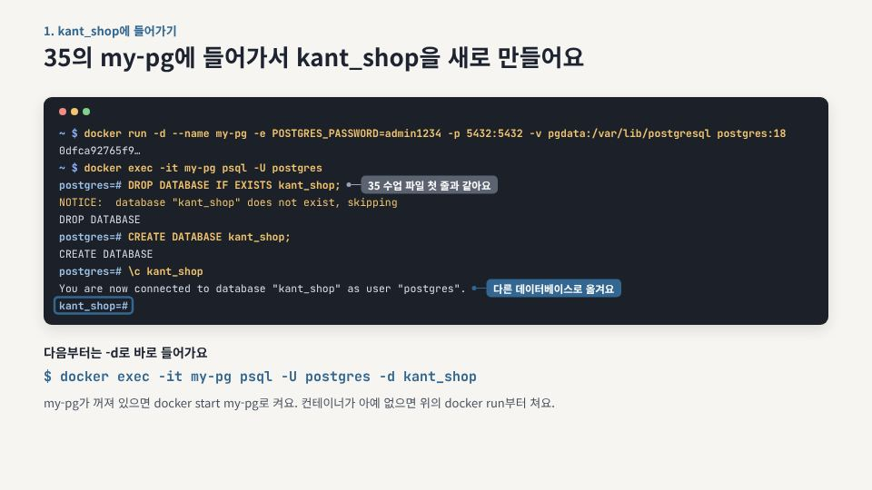
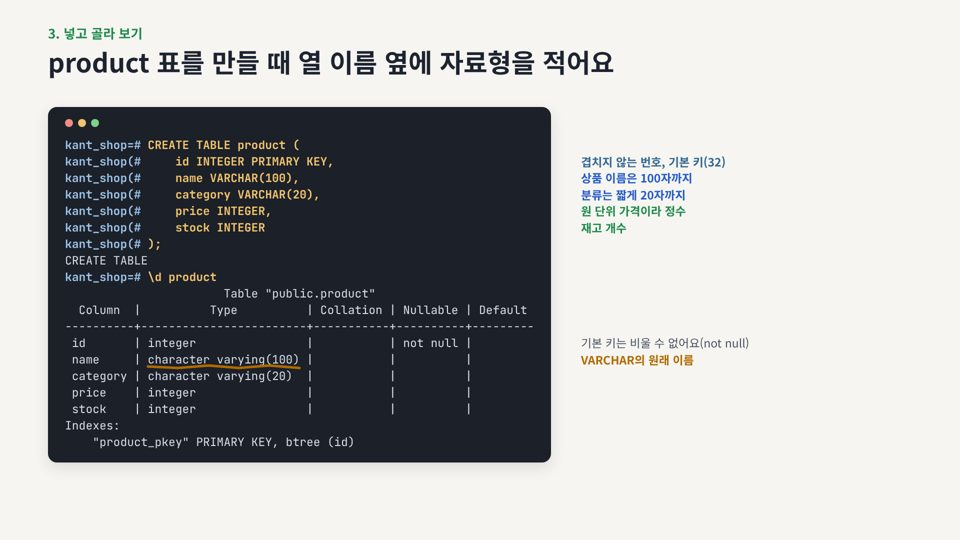
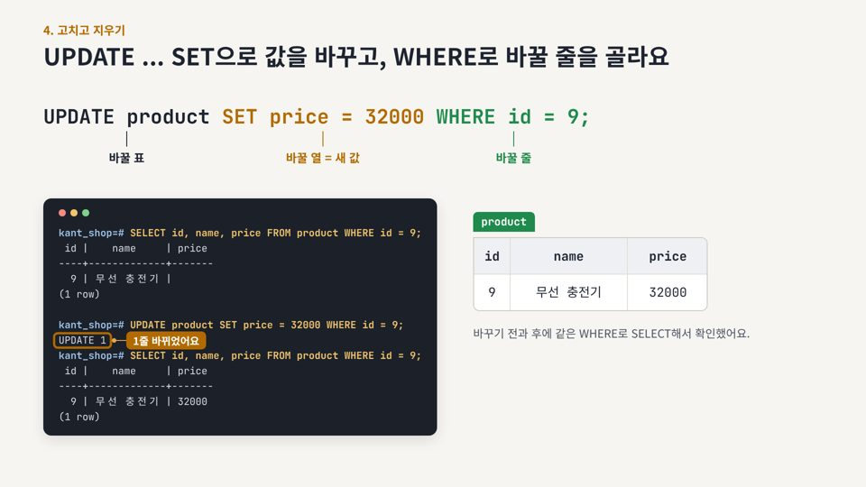
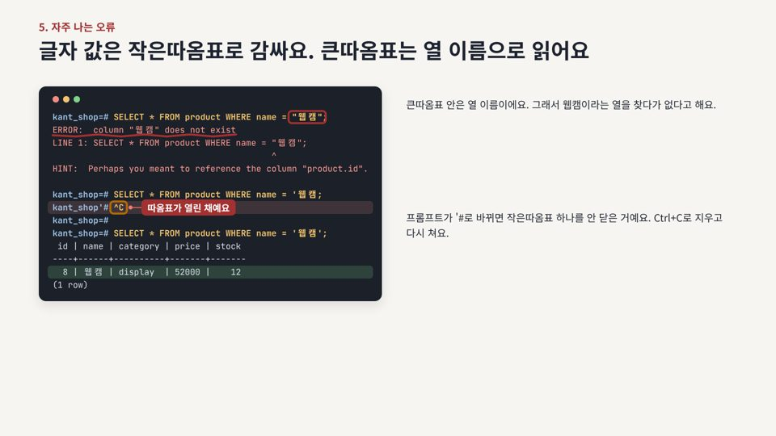
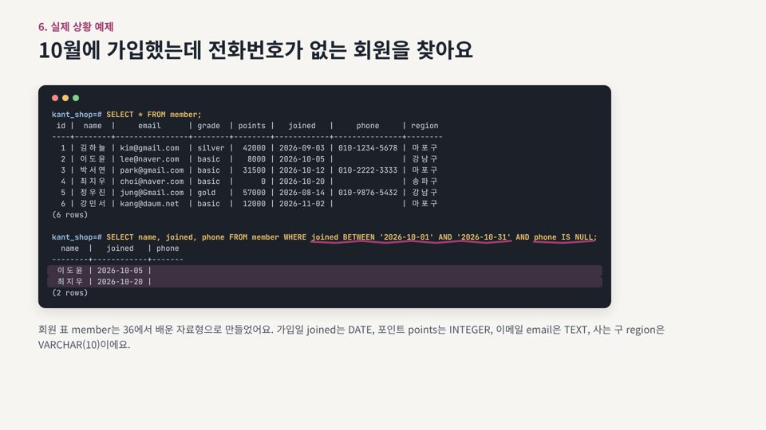
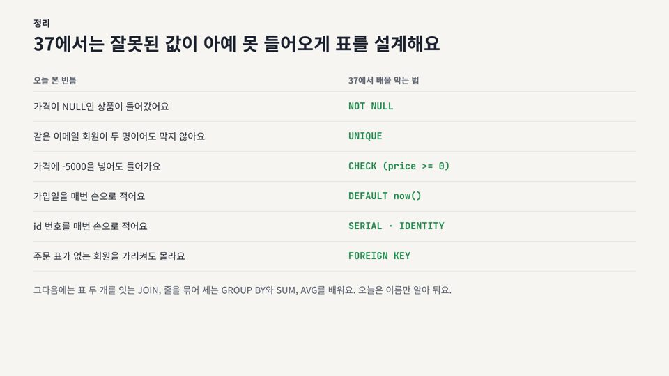

36 · 데이터베이스 · 입문
SQL 1
열마다 자료형을 고르고, 표에서 필요한 줄만 골라 보고 고치고 지워요

구성
40쪽 · 파트 8개들어가기1–4

kant_shop에 들어가기5

자료형 고르기6–12

넣고 골라 보기13–23

고치고 지우기24–30

자주 나는 오류31–33

실제 상황 예제34–37

정리38–40
배우는 것 9가지
- 글자(
CHAR,VARCHAR,TEXT), 정수(SMALLINT,INTEGER,BIGINT), 소수(NUMERIC,REAL,DOUBLE PRECISION),BOOLEAN, 날짜와 시간 자료형의 차이를 말하고 열에 맞게 골라요. INSERT로 여러 줄을 한 번에 넣고, 안 적은 열이NULL(모름)로 비는 것을 봐요.WHERE에 비교(=,<>,>=),AND,OR,IN,BETWEEN,LIKE,ILIKE,IS NULL을 써서 줄을 골라요.AS로 결과 열에 새 이름을 붙이고,price * 3처럼 계산한 값을 열로 꺼내요.DISTINCT로 겹치는 줄을 하나만 남기고,COUNT(*)로 맞는 줄이 몇 개인지 세요.ORDER BY로 줄을 세우고LIMIT,OFFSET으로 잘라요.UPDATE ... SET ... WHERE로 값을 고치고DELETE FROM ... WHERE로 줄을 지워요.RETURNING으로 바뀐 줄을 바로 보고,DROP ... IF EXISTS로 오류 없이 지워요.WHERE를 빼면 모든 줄이 바뀌거나 지워진다는 것을 알고, 고치기 전에 같은WHERE로SELECT부터 해요.